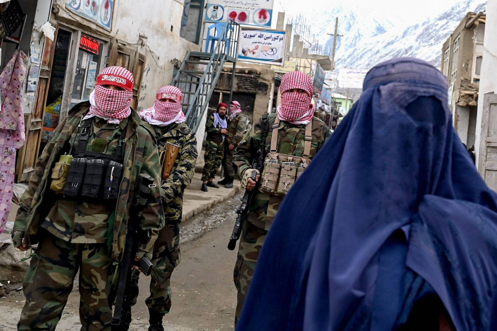

Oque está acontecendo no Afeganistão

Oque está acontecendo no Afeganistão
O cenário atual no Afeganistão exige atenção e profunda reflexão. Muitas vezes, as dificuldades cotidianas de nossa rotina nos impedem de enxergar crises humanitárias extremas que ocorrem simultaneamente pelo mundo. Ao analisar detalhadamente a situação do país, torna-se evidente o impacto devastador sofrido pela população civil.
Desde agosto de 2021 — marco que sinalizou a retirada definitiva das tropas dos Estados Unidos e o consequente retorno do grupo extremista Talibã ao poder —, a nação mergulhou em uma das crises políticas, econômicas e sociais mais severas da história recente. O que se testemunha hoje no território afegão é o colapso generalizado dos direitos humanos básicos.
O drama da fome (que é bizarro de tão real)
Imagina você olhar para a despensa da sua casa e não ter absolutamente nada. É o que está rolando com a maioria das famílias por lá.
Quase 5 milhões de pessoas estão literalmente no limite da fome extrema.
Em algumas províncias mais isoladas, as pessoas estão sobrevivendo só de pão seco e água quente. Tipo, almoço e janta é isso.
Não tem emprego para ninguém. Os pais de família saem todo dia para as praças pra tentar arranjar qualquer bico e voltam sem um centavo.
E sabe qual é o pior? O resto do mundo cortou a ajuda de dinheiro que mandava para lá porque ninguém quer apoiar o governo do Talibã. Só que, no fim das contas, quem tá arcando com as consequências e passando fome é o povo que não tem nada a ver com isso. 😢
O "apartheid de gênero" e o fim da infância
Se ser garota já tem seus desafios em qualquer lugar, ser uma adolescente de 15 anos no Afeganistão hoje é basicamente um pesadelo acordada. O Talibã simplesmente apagou as mulheres da sociedade.
Olha a lista de proibições:
Proibido estudar: Meninas não podem ir pra escola (depois do ensino fundamental) e nem pra faculdade. Imagina ser proibida de ter um futuro?
Proibido sair de casa sozinha: Elas só podem pisar na rua se tiverem acompanhadas por um homem da família (tipo o pai ou o irmão).
Casamento forçado infantil: Como as famílias estão na miséria mais absoluta, eles mudaram as leis e agora meninas de até 9 anos podem ser casadas. Os pais acabam vendendo as filhas para homens bem mais velhos só pra ganhar uma grana e conseguir comprar comida pros outros filhos não morrerem de fome. É de chorar.
🔍 Como o país chegou nesse flop total?
Para entender o caos, a gente precisa olhar um pouquinho para o passado. O Afeganistão é chamado de "Cemitério de Impérios" porque um monte de país grandão já tentou mandar lá e quebrou a cara.
Resumindo :
Anos 80: A União Soviética invadiu o país e foi uma guerra horrível.
Anos 90: O Talibã assumiu o poder pela primeira vez e impôs regras ultra radicais.
Anos 2000 a 2021: Os Estados Unidos invadiram depois do atentado de 11 de setembro. Ficaram lá por 20 anos tentando mudar as coisas.
2021 até hoje: Os EUA cansaram, pegaram as coisas deles e foram embora. O governo local desmoronou em dias e o Talibã pegou o controle de tudo de novo.
Um país esquecido pelo mundo
Por causa de todo esse caos, está rolando um êxodo gigante. Mais de 5 milhões de afegãos fugiram desesperados para países vizinhos como o Paquistão e o Irã para tentar sobreviver. Quem ficou e tenta protestar ou falar a verdade (tipo jornalistas e influenciadores locais) corre risco de vida e vive escondido.
O que me deixa mais triste é ver que o Afeganistão virou uma crise esquecida. A mídia e o mundo só falam de outras guerras mais recentes e parece que todo mundo ligou o "foda-se" para o povo de lá.
Ninguém merece viver sem liberdade, sem comida e sem direito de escolher o próprio futuro. A gente precisa continuar falando sobre isso para que eles não sejam totalmente esquecidos do mundo.
Reportagem escrita por : li.yamauti